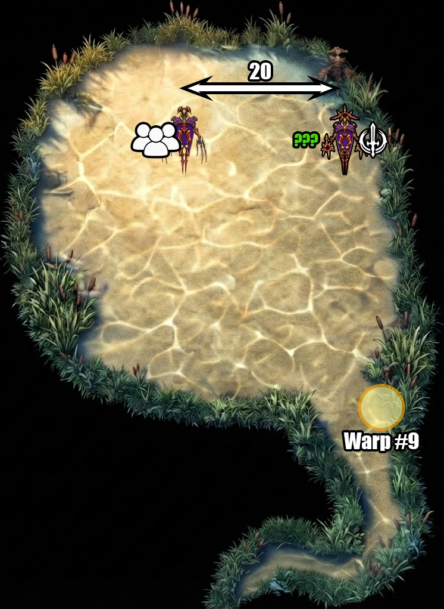

WAR pop et tient les adds · RUN tient Schah · les deux packs ne se touchent jamais

Le WAR pop au ???, le RUN Provoke Schah et le tient sur place. Schah ne bouge plus de la soirée.
Le WAR ramène chaque add ici. C'est là que tout le monde tape.
Les AoE de Schah ne touchent pas le groupe : Royal Decree, Banneret Charge (20 yalms, HP à 1), Enthrall.
Les -ga des adds ne touchent pas le RUN : Silencega, Slowga, Paralyga, Bindga, Sleepga, Stun AoE. Il tank Schah propre, sans debuff.
C'est l'ordre de pop. Le Bhata coupe la file dès qu'il sort — au-delà de 2 min il se transforme en 2e Mantri.